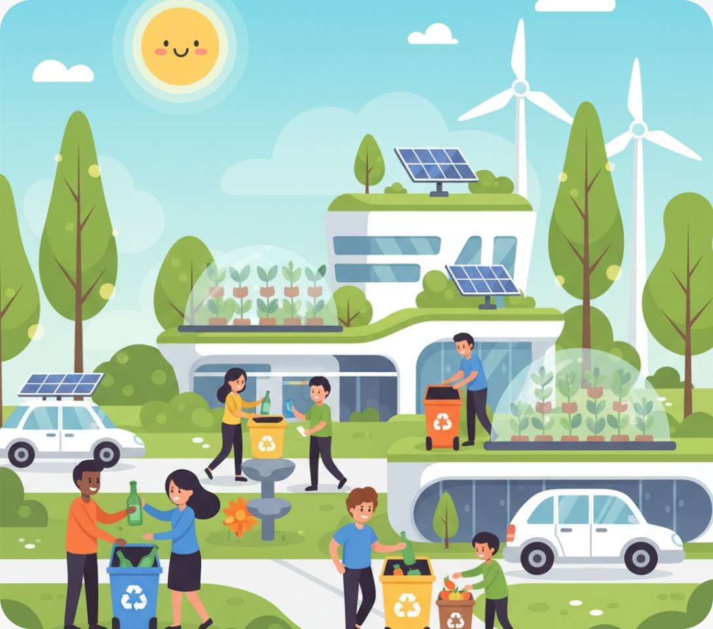

Conectamos moradores a empresas de reciclagem
Descarte seus resíduos recicláveis com praticidade, acompanhe seu impacto ambiental em tempo real e ajude a transformar sua cidade num ecossistema sustentável.

Como o ReciclaDescarte funciona?
Solicite a Coleta
Indique o tipo de material reciclável, peso estimado e agende o melhor horário pelo app.
Empresa Aceita
Uma empresa ou cooperativa homologada aceita o seu pedido e se desloca até você.
Reciclagem Feita
Pronto! O lixo é coletado, encaminhado para triagem e você ganha pontos de impacto.